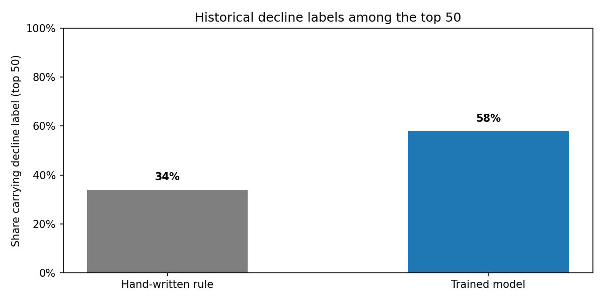
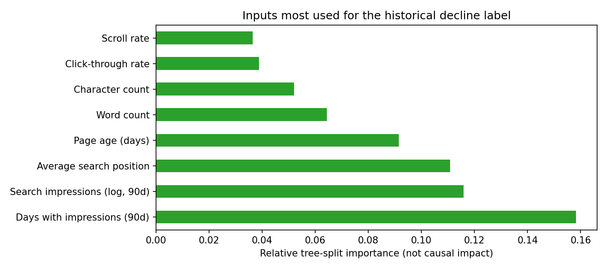

Abstract
We trained a machine-learning model called Random Forest, which combines many decision trees, to score records labelled as having a recent drop in search impressions. We compared its ranking with a hand-written scoring rule on records from seven clients left out of training. Among the 50 highest-ranked records, 29 had the decline label (precision 0.580), compared with 17 of 50 for the rule (0.340). The model's overall ranking ability was modest (ROC-AUC 0.609). Because the input metrics overlap the period used to define the decline label, this is a retrospective comparison—not an early-warning or future-prediction test. It does not show that refreshing content recovers traffic.
Dataset: 30,000 anonymized content records · 32 pseudonymized client groups · evaluation seed: 42
Question and decision
Research question: In this dataset, does a model trained on search, engagement, and content information rank records labelled with a recent search-impression decline differently from a transparent scoring rule, when tested on clients absent from model training?
Decision this could inform: Which pages might an editor choose to inspect first? The score is only a way to order records for review. An editor still needs to check the page, its search snippet and engagement context, and decide whether any change is appropriate.
A false positive uses editorial time on a page that may not need attention; a false negative may leave a declining page unreviewed. The experiment measures agreement with an existing label, not the benefit of acting on the score.
Data and safeguards
The bundled anonymized snapshot contains 30,000 content records across 32 pseudonymized client groups. We kept records with at least one search impression in the trailing 90 days and content at least 90 days old. A record gets the decline label when its search impressions in the most recent 30 days are more than 20% lower than in the preceding 30 days. That label describes a change that has already happened; it is not a forecast.
We excluded the label fields (trend_direction and trend_pct) from the model inputs. Client IDs were used only to keep each client entirely in either training or testing; content IDs were not model inputs. Important limitation: the input features include 90-day impression totals, which overlap the 30-day periods used to create the label. The test therefore checks retrospective ranking on unseen clients, not whether the model can warn about a decline before it occurs. This page shows aggregate results only—not record-level recommendations or pseudonymous IDs.
Method
The comparison rule adds three hand-weighted scores: search visibility (log-scaled 90-day impressions), time since the page was last updated, and average search position. It gives more position points to pages ranking 4–20 than to pages already in the top three, and a small default score when position is unavailable or outside that range. These weights are a simple comparison rule, not weights learned from data.
The trained Random Forest combines 100 decision trees; each tree makes a series of yes/no splits, and the combined trees produce a score for the decline label. We used 18 numeric inputs (including search demand, impressions, clicks, sessions, content age, click-through rate (CTR), and engagement) and five descriptive categories (competition level, content type, intent, age group, and position group). The categories were converted into 52 numeric input columns. The model did not receive the decline-label fields.
For a fair client-level separation, we used one random split: 25 clients (23,837 records) for training and seven different clients (6,163 records) for testing. No test client contributed training records. This is one held-out test set, not repeated cross-validation. Seed 42 makes the split reproducible.
Results on the same holdout
Among the 6,163 test records, 51.1% had the historical decline label. The two “share” columns show what fraction of the top 20 or top 50 records in each ranking carried that label. The overall ranking score summarizes how often a decline-labelled record is ranked above a non-decline record across ranking cutoffs; 0.5 is chance-level ordering.
| Scoring approach | Share with decline label (top 20) | Share with decline label (top 50) | Overall ranking score (ROC-AUC) |
|---|---|---|---|
| Hand-written rule | 20.0% | 34.0% | 0.529 |
| Trained model | 45.0% | 58.0% | 0.609 |
In this test set, 58% of the model's top 50 records had the decline label (29 records); the rule's top 50 contained 34% (17 records). That is a 24 percentage-point difference on this one split. The model's top-50 result was 6.9 points above the 51.1% test-set share, while its top 20 contained only 45% labelled declines—below that share. ROC-AUC is a summary of how often a randomly selected decline-labelled record is ranked above a non-decline record; 0.609 indicates only modest separation here. These figures describe this test sample and do not establish future performance.

Which information mattered most to the fitted model?
The model's largest input-importance scores were: number of days with impressions in the trailing 90 days (0.1582), log-scaled 90-day impressions (0.1160), average search position (0.1109), and page age (0.0916). These scores describe how useful each input was for the fitted trees' splits; they do not show that a factor caused a decline. Related inputs can overlap, and this importance measure can favor some kinds of features.

Practical use and limits
The score could be used to order pages for editorial inspection, but it should not trigger automatic changes. Check each page and its context before deciding whether to update it; track results if changes are made. The exploratory queue assigned these rule-based review categories: refresh 10,877; review the search snippet/click-through rate 9,428; monitor 6,428; review engagement 3,204; expand and refresh 63. These are category counts across the dataset, not measured benefits or success rates.
- The label identifies a drop already observed between two adjacent 30-day periods. The 90-day input metrics overlap those periods, so this analysis cannot establish advance warning.
- Only one split of clients was tested. Results could differ for other clients or another split.
- The overall ranking score was modest; missing numeric inputs were filled with zero, which can affect results.
- Search-results features, seasonal patterns, and external changes are not included and could help explain the observed drops.
- The exploratory full-dataset queue was scored by a model trained on 25 clients. Records from those training clients were seen during fitting, so their queue scores are not independent test predictions.
- This study did not measure whether editing a page recovers its traffic. That would require a separate prospective experiment.
Reproducibility
Verified with Python 3.11.9, NumPy 2.4.6, pandas 3.0.6, scikit-learn 1.9.1, and Matplotlib 3.10.8. The group split and trained tree-ensemble model use seed 42.
python -m pip install -r requirements.txt jupyter
jupyter notebook work/notebooks/capstone.ipynbFrom the repository root, open the notebook and choose Run All. The notebook uses data/raw/content_refresh_anonymized.csv and writes aggregate figures into work/outputs/.
View the capstone notebook and full analysis. The companion eight-section report is work/capstone_report.md.